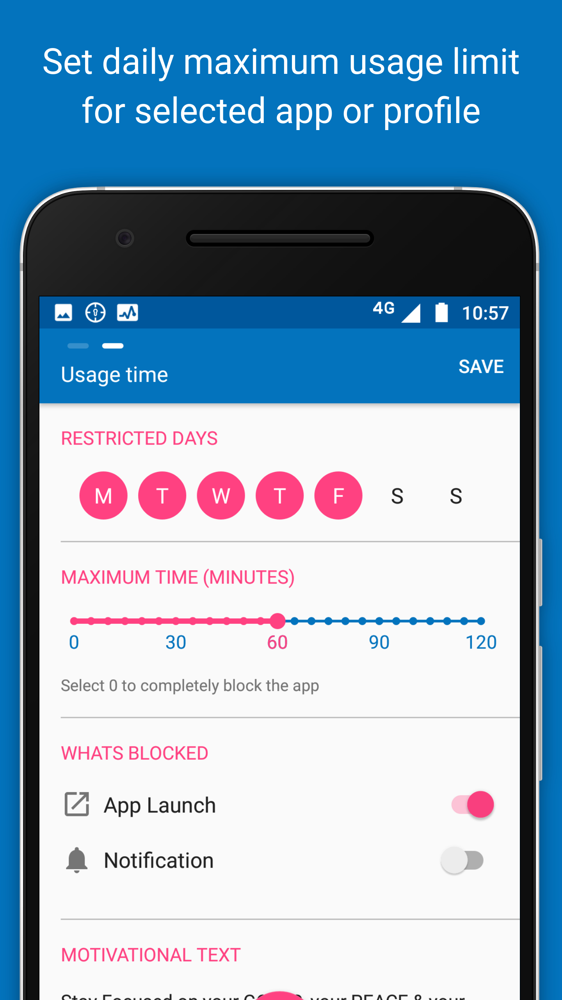
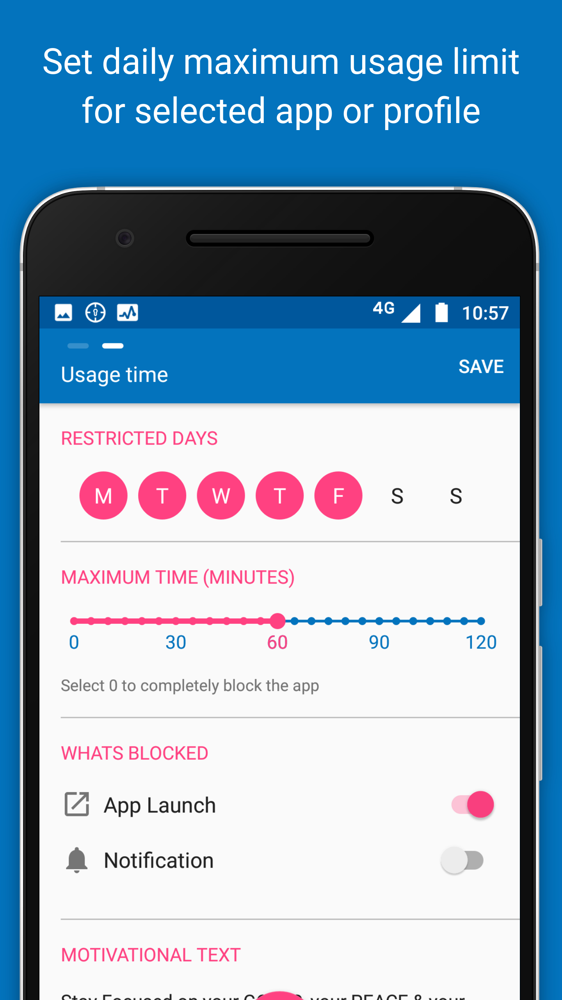
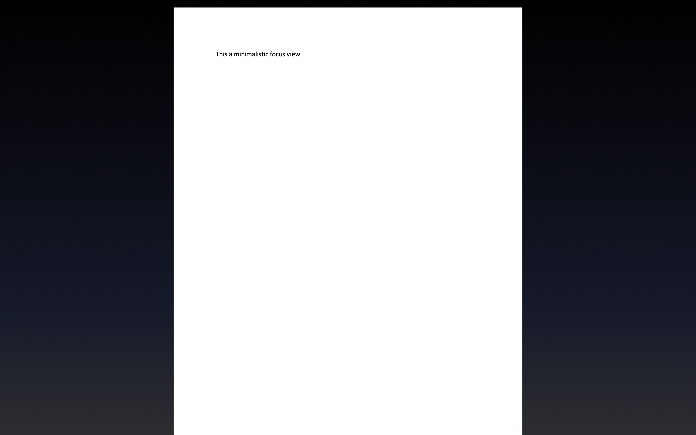
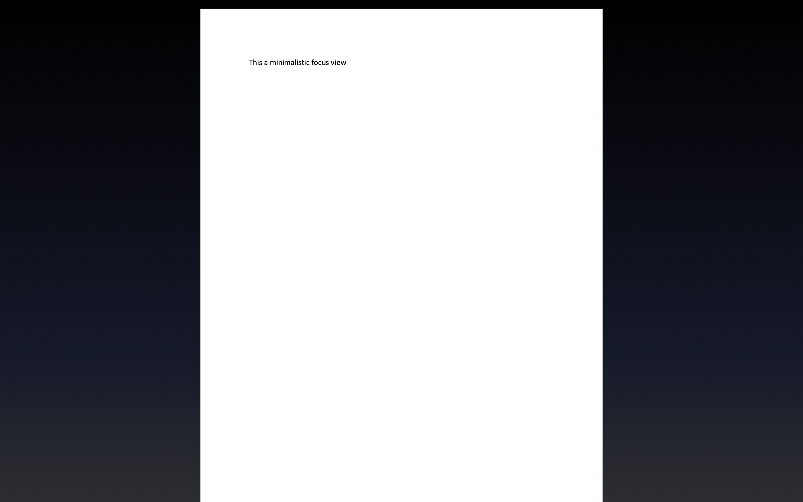
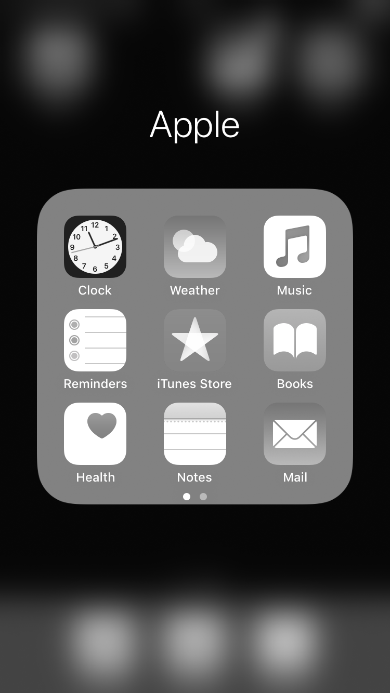

Block or remove distractions
Block access
If particular websites or apps distract you, try blocking your access to them for some time or after a certain amount of time has passed.
Laptop
Many browser extensions allow you to block websites. Discover these by searching through the web stores for extensions for the web browser you use: - Safari Extensions - Chrome Extensions - Firefox Add-Ons
The most popular website blocker for Chrome is Block Site - Website Blocker for Chrome™: 

Smartphone
On Android, the most popular app blocker is Stay Focused:
 

On iOS, you can use Apple’s built-in app Screen Time to block your own access to particular apps.
To do so, go to Settings -> Screen Time -> App Limits
Remove features
On laptop, use browser extensions to remove features of websites you find distracting.
For example, use extensions to remove Facebook’s newsfeed (e.g. with Chrome’s News Feed Eradicator), or recommended videos from YouTube (e.g. with Safari’s Distraction Blocker for YouTube):


The Chrome extension Click to Remove Element allows you to remove elements from any website with a single click:

If you use Gmail in a browser, Inbox When Ready hides your inbox by default, until you deliberately click that you wish to see it:

Search through the browser extension stores for a similar extension which might be useful to you: - Safari Extensions - Chrome Extensions - Firefox Add-Ons
Minimal writing tools
When you try to focus on writing, consider getting all distractions out of the way.
For smartphones, there are dedicated minimalistic writing tools such as JotterPad:

If you use Google Docs on laptop, there are browser extensions to make the interface super minimalistic, for example DistractionFree for Safari:

Even Microsoft Word now includes a minimalistic ‘Focus’ mode:
 

Go monotasking / dumbphone
A few tools can force your devices into ‘monotasking’ mode.
Laptop
Cold Turkey Writer allows you to turn your laptop into a typewriter until you’ve typed a specific number of words, or for a specific length of time:

Smartphone
On Android, simulate a similar situation with the app Dumbphone:

On iOS, get the same effect using Screen Time‘s ’Downtime’ feature. When ‘Downtime’ is scheduled, only phone calls and apps that you choose to allow are available:


Track yourself
See how your spend your time
Various tools are available to see how your spend time on your devices, and compare it to your goals.
On laptop, one of the most popular tools is RescueTime:

Android
On Android, apps such as Usage Time provide the same functionality:

Google provides the same functionality with Digital Wellbeing, which is pre-installed on many newer Android devices (Settings > Digital Wellbeing):


Work in bursts with a timer
To keep you on track, many people track themselves with a countdown timer. This is often done with the ‘Pomodoro’ technique, where you break your work down in intervals, typically 25 minutes, separated by short breaks.
Laptop
Numerous tools support this, for example Be Focused:

You can combine this with blocking distracting websites during work sessions, for example using the Chrome extension FocusMe:


Advance your goals
Make new tabs remind you of your goals
On laptop, you can make new tabs remind you of what you need to do.
For example, use the Chrome extension Focus to turn new tabs into a todo-list:

This extension also lets you block distracting websites while you focus on a specific task.
Search through the browser extension stores for a similar extension which might be useful to you: - Safari Extensions - Chrome Extensions - Firefox Add-Ons
Motivational quotes
On laptop, use new tabs to remind you of the important things in life.
For example, use the Chrome extension Daily Motivation to put motivational quotes on new tabs:

Search through the browser extension stores for similar extensions for your browser: - Safari Extensions - Chrome Extensions - Firefox Add-Ons
Replace Facebook’s newsfeed with a todo-list
On laptop, you can also replace Facebook’s newsfeed with other content.
For example, use the Chrome extension Todobook to replace Facebook’s newsfeed with a todo list.

Search through the browser extension stores for similar extensions for your browser: - Safari Extensions - Chrome Extensions - Firefox Add-Ons
Automatically redirect yourself away from distraction
On laptop, automatically redirect yourself away from distracting websites when you need to focus.
For example, use the Chrome extension Timewarp:

Search through the browser extension stores for similar extensions for your browser: - Safari Extensions - Chrome Extensions - Firefox Add-Ons
Periodic reminders
Be mindful of what you’re supposed to be doing.
For example, use the Chrome extension Gen4 to get periodic reminders of what you’re supposed to be doing while browsing the web:

Reward or punish yourself
Protect a virtual creature by sticking with your intentions
To get a little extra push of motivation to use your devices in the way you intended, add a little reward.
One of the most popular tools for this is Forest which lets you grow virtual trees during focus sessions - the trees die if you do not stick with your goal…


Forest is available for iOS, Android, and as a Chrome extension.
Other options include Feed the Goat (Chrome Extension) or Flora (iOS):


Writing under pressure
The online tool The Most Dangerous Writing App helps you get into the flow of writing by adding pressure: Set a target word count or duration, begin typing, and if you stop typing for more than a few seconds before you hit the goal, all you have typed is deleted! Perfect for simulating the feeling of being so close to a deadline that procrastination is no longer an option!
Change your digital environment
Go grey-scale (smartphone)
A simple way to make your smartphone less distracting is to turn it greyscale when you do not need color.

On iPhone, set a triple-tap on the Home button to toggle grey scale on and off: - Settings > Accessibility > Accessibility Shortcut > Colour Filters
Newer versions of the Android operating system may include a gray scale toggle in your phone’s quick settings.
Arrange your apps (smartphone)
Arrange your apps so that the home screen is minimalistic and simple, and so that the apps you’d like to use less often require a bit more effort to reach.
For example, limit your first page of apps to only apps you use for quick in-and-out tasks - move the rest of your apps, especially mindless choices, off the first page and into folders.


Do not disturb during set hours
Schedule do not disturb, so that during certain hours (e.g. 9pm to 8am) only calls from your favorite contacts go through directly.

Wind Down on newer versions of Android also provides this feature, as well as the ability to automatically turn your phone greyscale when getting ready for bed.
Manage notifications
Be ruthless about which apps you give the ability to send you notifications.
On iOS, go to Settings > Notifications and carefully consider which apps should be allowed to disturb you.
On a Mac, newer operating systems also include a Do Not Disturb mode, for when you need to focus without having popups about incoming email etc.:

Use full-screen (laptop)
On a laptop, try limiting the amount of information available to you to what you actually need for your task.
On Mac, one way to do this is by using full screen mode to e.g. put two tools you need side by side:

Rather than this…

… try this